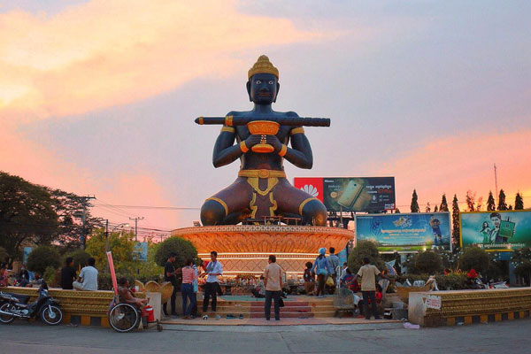

Phnom Penh
The capital of the Kingdom of Cambodia is the
largest city in the country with a population
of nearly 2 million in 2017. Phnom Penh is the
center of business, trade, industry and the largest
collection of jobs.
See More

Siem Reap
Siem Reap is bordered on the north by Angkor Thom and Banteay Srei districts. South against: Tonle Sap Lake, east against Prasat Bakong district. West vs. Puok district. And has a candidate area of 424.73 km2. There are 12 communes with a population of 244,272 (49,805 families), 549 / km2. Today, Siem Reap is known all over the world
See More

Sihanoukville
Sihanoukville is a natural tourism city bordering Prey Nup and Stung Hav districts to the east, the sea to the west, Stung Hav district to the north and Prey Nup district to the south with a total area of 195.90 km2. A total of 7,657 people. "Sihanoukville" is located in Sihanoukville Province.
See More

Battambang Province
Battambang (Khmer: បាត់ដំបង) is a province (khaet) of Cambodia
in the far northwest of the country. Bordering provinces are
Banteay Meanchey to the north, Pursat to the east and south,
Siem Reap to the northeast, and Pailin to the west. The northern
and southern extremes of the province's western boundaries form
part of the international border with Thailand. In addition,
Tonle Sap forms part of the northeastern boundary between Siem
Reap and Pursat. Its capital and largest city is Battambang. It
is the fifth most populous province in Cambodia. In land area,
Battambang is the fifth largest province of Cambodia. Battambang
is one of the provinces included in the Tonle Sap Biosphere
Reserve.
See More

Kampong Thom Province
Kampong Thom (Khmer: កំពង់ធំ) is a province (khaet) of Cambodia.
It borders the provinces of Siem Reap to the northwest, Preah
Vihear to the north, Stung Treng to the northeast, Kratie to the
east, Kampong Cham, Kampong Chhnang to the south, and the Tonle
Sap to the west. The provincial capital is Stung Saen, a town of
approximately 30,000 people on the banks of the Stung Sen River.
Kampong Thom is Cambodia's second largest province by area.
There are a number of significant Angkorian sites in the area,
including Prasat Sambor Prei Kuk and Prasat Andet temples. As
one of the nine provinces bordering Tonle Sap Lake, Kampong Thom
is part of the Tonlé Sap Biosphere Reserve.
See More
Kampot Province
Kampot (Khmer: ខេត្តកំពត) is a (south west province) province
(khaet) of Cambodia. It borders the provinces of Koh Kong and
Kampong Speu to the north, Takeo and Kep and Vietnam to the east
and Sihanoukville to the west. To its south it has a coastline
of around 45 km on the Gulf of Thailand. It is rich in low
arable lands and has abundant natural resources. Its capital is
Kampot town. Kampot Province had a population of 627,884 in 2010
and consist of eight districts divided into 92 communes with a
total of 477 villages. Touk Meas City is located in Kampot
Province. Under 19th century French colonial administration
Kampot became a regional administrative.
See More
Kep Province
Kep (Khmer: កែប), also romanized as Kaeb (កែប, "Saddle"),
formally known as Kep Province (ខេត្តកែប), is the smallest
province (khaet) of Cambodia covering 336 km2 (130 sq mi), with
a population of 41,798. It is one of the newest Cambodian
provinces, together with Pailin, Sihanoukville and Tboung Khmum,
created by Royal Decree on 22 December 2008, which separated Kep
Municipality & Damnak Chang'aeur District from the Kampot
Province, as well as adjusting several provincial borders. It is
both the smallest and least populous province of Cambodia. The
provincial capital is Kep District and the province contains the
Kep National Park. The territory of Kep is entirely.
See More

Koh Kong Province
Koh Kong (Khmer: ខេត្តកោះកុង) is a province (khaet) of Cambodia.
The name means 'Kŏng Island Province'. Its capital is Khemarak
Phoumin (Koh Kong). The province was called Patchan Khiri Khet
Province (Thai: ปัจจันตคิรีเขตร) from 1795 to 1904. The most
southwestern province of Cambodia, Koh Kong has a long
undeveloped coastline and a mountainous, forested, and largely
inaccessible interior which includes part of the Cardamom
Mountains, Cambodia's largest national park (Botum Sakor
National Park), and a section of Kirirom National Park. From
1795 to 1904 the area was under Siamese administration with the
local name of "Koh Kong". During the reign of King Mongkut the
name Patchan Khiri.
See More

Kratié Province
Kratié, alternatively Kraches or Kracheh (Khmer: ក្រចេះ ) is a
province (khaet) of Cambodia located in the northeast. It
borders Stung Treng to the north, Mondulkiri to the east,
Kampong Thom and Kampong Cham to the west, and Tbong Khmum and
Vietnam to the south. The capital of the province is the town of
Kratié located in Kratié District. The area now known as Kratié
was part of the early first millennium Kingdom of Funan until
Funan itself was superseded and absorbed in the 6th century by
Chenla. Sampheak Borak, the former Royal Capital during the
Chenla Era, is located in Sambo District.[citation needed] In
addition, Kratié has Vihear Sasar Muayroy Pagoda built in the
16th century.
See More

Mondulkiri Province
Mondulkiri, officially Mondul Kiri(Khmer: មណ្ឌលគិរី), is a
province (khaet) of Cambodia. Bordering the provinces of Kratié
to the west, Stung Treng to the northwest, Ratanakiri to the
north and the country of Vietnam to the east and south, it is
the most sparsely populated province in the country despite
being the largest in land area. The province was created in 1961
from the eastern part of Kratié Province. The capital is the
town of Senmonorom. In 1960 Mondulkiri was created out of Kratié
Province by order of King Norodom Sihanouk. Saen Monorom was set
up as the capital in 1962. During the Vietnam War in the late
1960s, Mondulkiri was home to three bases of the National
Liberation.
See More
Preah Vihear Province
Preah Vihear (Khmer: ព្រះវិហារ) is a province (khaet) of
Cambodia. It borders the provinces of Oddar Meanchey and Siem
Reap to the west, Kampong Thom to the south and Stung Treng to
the east. Its northern boundary forms part of Cambodia's
international border with Thailand and Laos. Its capital is
Preah Vihear. The province is named after the temple of Prasat
Preah Vihear. The Dângrêk Mountains and the Cambodia/Thailand
border are in the north of Preah Vihear Province. Preah Vihear
is one of the nine provinces that are part of the Tonle Sap
Biosphere Reserve. Koh Ker complex: Koh Ker was once the capital
city of Khmer Empire. Bakan or Preah Khan Kompong Svay.
See More
Ratanakiri Province
Ratanakiri or Ratanak Kiri(Khmer: រតនគិរី), is a province of
northeast Cambodia. It borders the provinces of Mondulkiri to
the south and Stung Treng to the west and the countries of Laos
and Vietnam to the north and east, respectively. The province
extends from the mountains of the Annamite Range in the north,
across a hilly plateau between the Tonle San and Tonle Srepok
rivers, to tropical deciduous forests in the south. In recent
years, logging and mining have scarred Ratanakiri's environment,
long known for its beauty. For over a millennium, Ratanakiri has
been occupied by the highland Khmer Loeu people, who are a
minority elsewhere in Cambodia. During the region's early
history.
See More